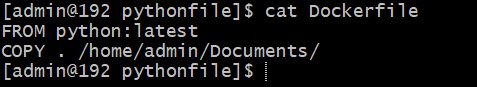

Get Docker Image[ex:NGINX]:

Show Docker Images

Delete Docker Images
PS: Image tidak bisa dihapus jika masih digunakan container (running service
Create Docker Container
sudo docker container create --name webserver1 -p 8080:80 nginx:latest
Show Docker Container
Start Service Docker Container
Access Web NGINX
Stop Service Docker Container
Delete Docker Container
Create Dockerfile on the same folder with python file
Nano Dockerfile

Build Dockerfile